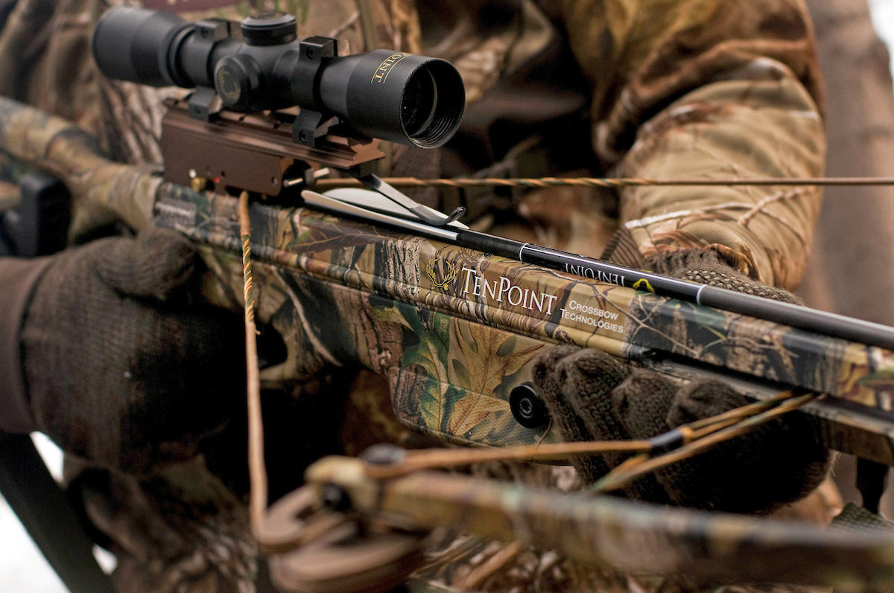
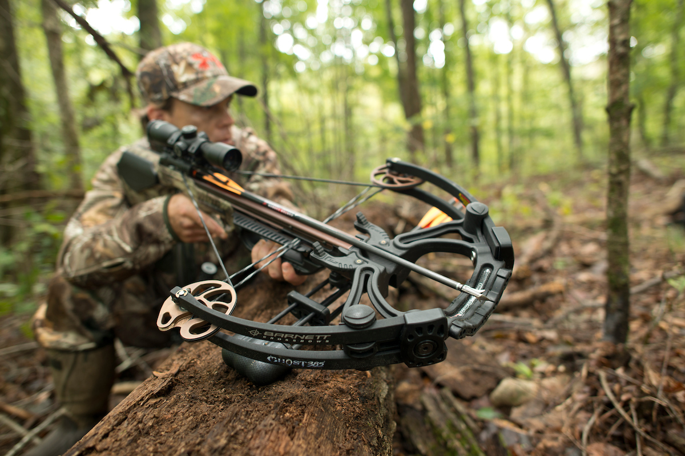
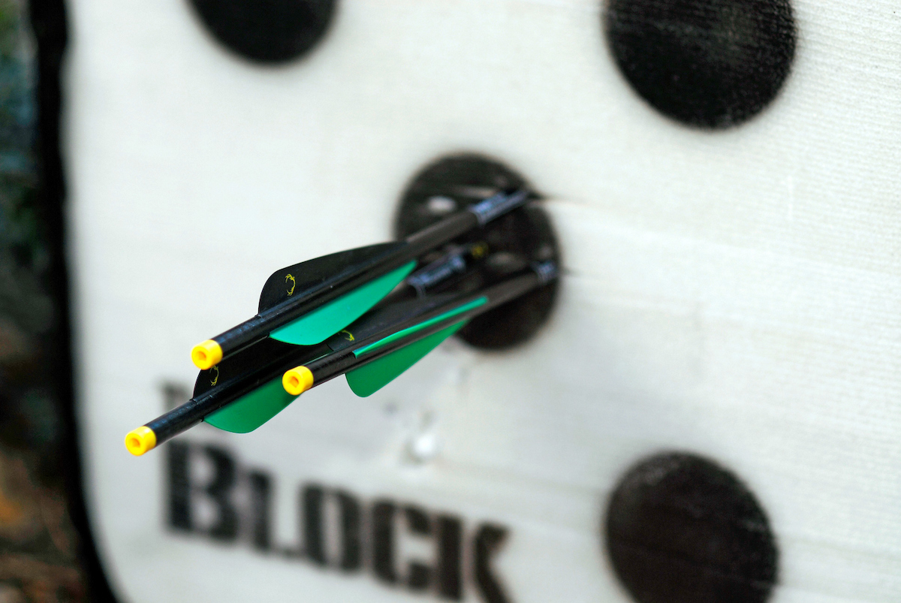

Crossbow
Crossbows are a popular choice for new and experienced bowhunters. They offer a short learning curve and precision accuracy – an excellent feature for bowhunting – and are a fantastic way to have a little fun with archery. Before bowhunting with a crossbow, check your local and state regulations regarding approved bowhunting equipment. Equipment specifications vary by state.
The crossbow’s short learning curve and accuracy are thanks to its design. The bow part of a crossbow looks like a standard bow, only smaller and mounted horizontally. Like conventional bows, crossbows come in recurve and compound varieties.

With a typical recurve or compound bow, the archer pulls the bowstring and holds it in place, either with their fingers or a release aid. A crossbow is different – the bowstring is locked and held in place by a mechanical latch rather than physical strength. This feature, called the cocked position, makes crossbows an excellent option for archers with injuries. Also, accuracy improves because you don’t have to struggle against the bow’s weight when aiming.
Standard bows are held with one hand on the grip and one hand on the bowstring. Crossbows, on the other hand, are fired from a shouldered position. Both hands and the shoulder support the crossbow, giving you a steadier aim, whether in a treestand or ground blind. You can also use bipods, tripods and shooting sticks to get a rock steady aim.
A telescopic scope can further improve your accuracy because it helps you take precision aim even at far-away targets. Enhanced aiming, of course, helps ensure proper shot placement, enabling you to take advantage of coveted shot opportunities while bowhunting.
Anatomy of a Crossbow

Stirrup – A metal frame located at the front of the crossbow. Place your foot inside the stirrup to secure the crossbow during cocking.
Stock – A stock is considered the body of the crossbow. All other parts of the crossbow are attached to the stock. The front of the stock where you grip the bow is called the foregrip. The rear of the stock that rests against your shoulder is called the buttstock.
Limbs – The limbs provide the bow’s power. They flex and store energy to propel the bolt. Recurve crossbows have curved limbs. Compound crossbows have a pulley system, called cams, at the end of the limbs.
Bowstring – The bowstring connects both limbs and transfers the bow’s energy to the bolt.
Rail – The top of the foregrip is called the rail. This is where the arrow sits and the bowstring slides across.
Trigger – Crossbows have a trigger mechanism, which releases the latch that holds the bowstring. The trigger also has a safety that prevents accidental misfires.
Crossbow Arrows, aka “Bolts”

Crossbow arrows, called bolts, are made of carbon fiber or aluminum. They are shorter than standard arrows and are made specifically for crossbows. It’s important to only use manufacturer-recommended crossbow bolts. Manufacturers specify bolt length, weight, nock type and fletching requirements.
Cocking Aids
A cocking aid makes cocking your crossbow easier. These devices hook onto the string and increase mechanical advantage. When you purchase a crossbow at your local archery store, the staff can teach you how to use a cocking device.
#Article from Bowhunting 360
Read More
> Recurve Bow> Compound Bow
> Traditional Bow